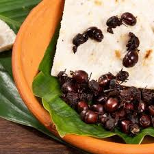

La provincia de Guanentá, un tesoro escondido en el corazón de Santander, Colombia, invita a un viaje en el tiempo. Sus pueblos coloniales, con sus calles empedradas y casas de bahareque, cuentan historias de un pasado rico y complejo. El imponente Cañón del Chicamocha, una maravilla natural, ofrece vistas panorámicas que quitan el aliento y una amplia gama de actividades al aire libre. Y si eres amante de la aventura, San Gil te espera con sus deportes extremos. Pero Guanentá es mucho más que eso: es una tierra de tradiciones, donde la cultura Guane se fusiona con la española, dando lugar a una identidad única. Su gastronomía, con platos como el hormigo y el mute, es un verdadero deleite para los sentidos. ¡Ven a descubrir la magia de Guanentá!

Guanentá, un tesoro colombiano...
Arquitectura colonial: Los pueblos de Guanentá conservan un hermoso patrimonio arquitectónico colonial, con casas de bahareque, calles empedradas y plazas majestuosas que transportan a otra época.
Cultura Guane: Los indígenas Guane dejaron un legado invaluable en la región, con sus elaboradas cerámicas, tejidos y conocimientos agrícolas. Aún hoy en día, su influencia se percibe en las costumbres y tradiciones de los habitantes.
Caminos reales: Estos antiguos senderos construidos por los indígenas Guane y posteriormente utilizados por los españoles, son hoy en día rutas turísticas que permiten descubrir la historia y la naturaleza de la región.
Cañón del Chicamocha: Uno de los atractivos más impresionantes de la región, el Cañón del Chicamocha ofrece vistas panorámicas espectaculares y una gran variedad de actividades al aire libre, como senderismo, parapente y deportes acuáticos.
Pueblos pintorescos: Barichara, Guane y San Gil son algunos de los pueblos más hermosos de la provincia, con calles empedradas, casas coloridas y una atmósfera tranquila.
Deportes extremos: San Gil es reconocido como la capital de los deportes extremos en Colombia, ofreciendo una amplia gama de actividades como rafting, canyoning, espeleología y puenting.

Gastronomía típica: La cocina guanentina es una delicia para el paladar, con platos tradicionales como el hormigo, el mute y los tamales.
Artesanía: La artesanía local es otro de los atractivos de la región, con productos elaborados a mano como sombreros, hamacas y objetos decorativos.
Fiestas y tradiciones: A lo largo del año se celebran diversas festividades religiosas y culturales, como la Semana Santa, las fiestas patronales y los carnavales, que llenan de color y alegría los pueblos de la provincia.
Hormigas Culonas: Este plato exótico, heredado de los indígenas Guane, consiste en hormigas gigantes a las que se les retira la cabeza, alas y patas, para luego freírlas y sazonarlas. Son una fuente rica en proteínas y se consideran un manjar local.
Sancocho: Un guiso a base de diferentes tipos de carne (res, pollo, cerdo), yuca, plátano, maíz, verduras y especias. Es un plato contundente y nutritivo, perfecto para los días fríos.
Mute: Una sopa espesa y reconfortante hecha a base de maíz, frijol, arroz, carne y verduras. Es un plato muy popular en toda Colombia, pero en Guanentá tiene un sabor especial.
Guarapo: Jugo de caña de azúcar, una bebida dulce y refrescante muy popular en las zonas rurales de Colombia.
Maíz: Es el ingrediente principal de muchos platos, como el mute, los tamales y el masato. Yuca: Un tubérculo similar a la mandioca, se utiliza en sopas, guisos y como acompañamiento. Plátano: Se consume tanto verde como maduro, en diferentes preparaciones. Carne: Res, cerdo y pollo son las carnes más utilizadas. Verduras: Se utilizan una gran variedad de verduras de la región, como tomate, cebolla, ají, zanahoria y arveja. -Especias: El comino, el cilantro y el ajo son las especias más comunes.
Mucho antes de la llegada de los españoles, la región de Guanentá era habitada por los indígenas Guane, quienes dejaron un legado cultural invaluable. Los Guane eran expertos agricultores, ceramistas y tejedores. Construyeron elaboradas tumbas y desarrollaron un sistema de caminos que conectaban sus asentamientos. Sus conocimientos astronómicos y su profundo respeto por la naturaleza son evidentes en sus cerámicas y petroglifos.
¡Absolutamente! La provincia de Guanentá es un tesoro histórico y cultural de Colombia con una rica historia que se remonta a tiempos precolombinos. La Guanentá Precolombina: Mucho antes de la llegada de los españoles, la región de Guanentá era habitada por los indígenas Guane, quienes dejaron un legado cultural invaluable. Los Guane eran expertos agricultores, ceramistas y tejedores. Construyeron elaboradas tumbas y desarrollaron un sistema de caminos que conectaban sus asentamientos. Sus conocimientos astronómicos y su profundo respeto por la naturaleza son evidentes en sus cerámicas y petroglifos. La Conquista y la Colonia: Con la llegada de los españoles, la vida de los Guane cambió drásticamente. Fueron sometidos a trabajos forzados y enfermedades que diezmaron su población. Sin embargo, su cultura resistió y se mezcló con la española, dando origen a una nueva identidad. Durante la época colonial, Guanentá se convirtió en una importante región productora de tabaco. Las haciendas y los ingenios se multiplicaron, y los caminos reales fueron mejorados para facilitar el transporte del producto.